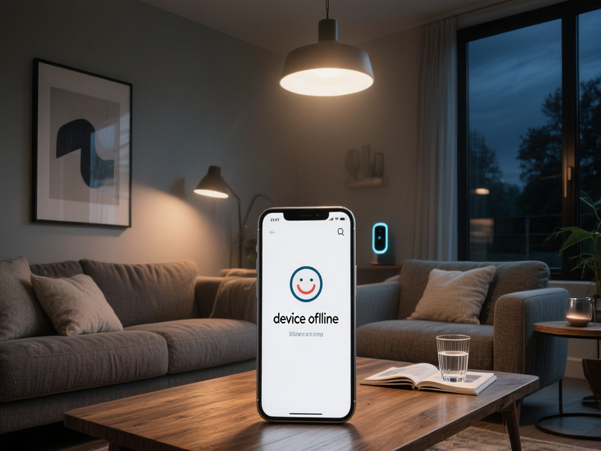

你的灯又掉线了？
"小爱同学，开灯——等了3秒，没反应。"
"半夜起来上厕所，灯不亮，手机App里显示设备离线。"
"花了三万块做的全屋智能，结果隔三差五就有灯失联，还不如普通开关。"
如果你也经历过这些，你并不孤单。在知乎、小红书、什么值得买上，「智能灯掉线」是仅次于「买哪个品牌」的第二大讨论话题。Google上"Why smart lights keep disconnecting"每个月有几万次搜索。这是智能家居用户的头号痛点。
好消息是：掉线极少是「运气问题」，几乎都能找到明确原因并修复。这篇文章不卖产品，只讲干货——从协议原理到网络部署，手把手帮你把灯稳住。
第一步：先搞清楚你在用哪种协议
不同类型的智能灯，掉线原因完全不同。先对号入座：
| 协议 | 代表产品 | 通信方式 | 掉线典型原因 |
|---|---|---|---|
| WiFi直连 | 米家WiFi灯泡、Yeelight WiFi版 | 灯直接连路由器2.4G WiFi | 路由器带不动、信号盲区、2.4G信道拥堵 |
| Zigbee | 涂鸦Zigbee、Aqara、Philips Hue | 灯→网关→路由器 | 网关位置差、网状网络薄弱、WiFi信道冲突 |
| 蓝牙Mesh | 米家蓝牙Mesh系列、华为HiLink | 灯→网关（或有Mesh功能的音箱）→路由器 | 覆盖范围有限、网关距离过远 |
| Matter/Thread | 2024年后新款产品 | 灯↔边界路由器↔IP网络 | 生态尚在早期，兼容性问题较多 |
Zigbee灯的掉线，八成是网络部署问题。Zigbee本质是一个「网状网络」，设备之间可以互相中继信号。但如果你的网关藏在电视柜后面，而最远的灯在阳台上，中间又没有其他常供电的Zigbee设备做中继——那就相当于在喊话传信时中间人是聋子。
蓝牙Mesh灯的掉线，通常是网关覆盖不足。蓝牙本身的穿墙能力弱于Zigbee，如果网关和灯之间隔了两堵承重墙，大概率断连。
第二步：逐层排查（从简单到深入）
按照下面的顺序排查，不要跳步。每一步操作后观察24小时，确认稳定再往下走。
层级1：电源和物理位置（10分钟）
- 检查网关/路由器的物理位置：如果协调器（网关）藏在电视柜里、金属架后面、或者叠放在WiFi路由器正上方——先把它移到开放空间。网关与WiFi路由器之间保持至少0.5米距离。
- USB网关用延长线：很多Zigbee网关是USB棒，直接插在主机背后，天线被金属机箱全屏蔽。花5块钱买根USB延长线让网关悬空放置，信号强度可能翻倍。
- 检查常供电设备：如果你把Zigbee智能插座（中继节点）插在了一个会被随手关闭的插排上——每次关插排，后面一大片灯集体掉线。把中继设备插在永远通电的插座上。
层级2：WiFi信道冲突（15分钟）
Zigbee和WiFi都在2.4GHz频段工作，信道严重重叠。在公寓楼里，邻居家的WiFi也参与干扰。
对照表：
| 你的WiFi 2.4G信道 | 推荐Zigbee信道 | 说明 |
|---|---|---|
| 1 | 15、20、25 | 避开信道1的频谱重叠区 |
| 6 | 11、15、20 | 信道11是常用备选 |
| 11 | 15、20 | 高信道邻居多时选中间值 |
层级3：网状网络覆盖率（30分钟）
打开网关App，找到网络拓扑图或设备列表。检查每个掉线设备「通过哪个路由节点」连接到网关。
关键指标：
- 室内每6-8米至少有一个常供电的Zigbee路由器（智能插座、入墙开关等）。
- 每个设备应该有至少2条路径到达网关。如果拔掉某个路由节点导致多个设备同时离线，说明网络对那个节点过度依赖——在附近加1-2个路由设备。
- 多层住宅：每层楼楼梯口放一个路由设备作为桥梁，不要把网关放一楼而三楼设备直接连。
层级4：固件与软件（20分钟）
- 更新网关固件、集线器软件到最新版本。
- 检查掉线设备的制造商OTA更新。
- 重点：重大版本更新前，先导出/备份Zigbee网络配置。如果新版本引入不稳定，回滚版本比重配所有设备省时间得多。
层级5：建筑结构因素（评估，不一定能改）
钢筋混凝土、黏土砖、带金属箔的隔热层——这些都是2.4GHz信号的克星。如果你的家是老式厚墙结构：
- 在走廊和门厅放置路由设备桥接信号。
- 不要把网关放在电梯井或大型金属柜旁边。
- 搬家或装修时，预先规划网关和中继节点位置。
层级6：最后一招——重新配对
仅在以上所有步骤都完成后，把你经常掉线的设备恢复出厂设置，在它最终安装的位置重新配对。不要在网关旁边配对好再装回远处——那样设备仍然使用近距离时的信号参数，放远后不会自动调整。
第三步：协议选择的终极建议
如果你正在装修或计划升级，以下是针对不同场景的协议建议：
小户型（<80平米）、设备<10个：WiFi灯够用，但建议选支持2.4GHz+5GHz双频的好路由器，把2.4GHz专门留给智能设备。
中等户型（80-150平米）、设备10-30个：强烈建议上Zigbee。选一个有线网口的网关（不要WiFi网关），放在房屋中央位置，配合2-3个智能插座做中继。这是目前性价比和稳定性最均衡的方案。
大户型/别墅、设备30+个：Zigbee + 有线网关 + 每层至少2个中继节点。同时考虑Matter/Thread作为未来的补充（但目前不推荐作为主力协议）。
已经入了米家生态坑：如果你已经有大量米家蓝牙Mesh设备，确保中枢网关覆盖到位。蓝牙Mesh对网关距离敏感，网关能放多近放多近。
一个真实案例
去年一个客户，150平米四房，装了28个涂鸦Zigbee射灯和筒灯，配了一个USB Zigbee网关插在客厅电视柜后的NAS上。装修完第一个月就频繁掉线，最夸张的时候一次掉6个灯。
排查过程：
总结：三个改动，总共花了不到100块钱（两根延长线+两个智能插座），解决了三万元装修的最大痛点。
写在最后
智能家居掉线，说到底不是玄学，是工程问题。WiFi信道、Zigbee网络拓扑、设备物理位置、固件版本——这些都是可控变量。
按本文的排查顺序一步一步来，99%的掉线问题都能定位并修复。如果全部排查完还是掉——那可能是硬件本身有问题，走售后换新。
你的灯，值得稳定在线。